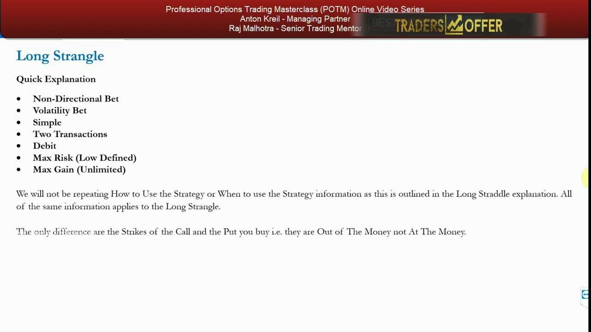
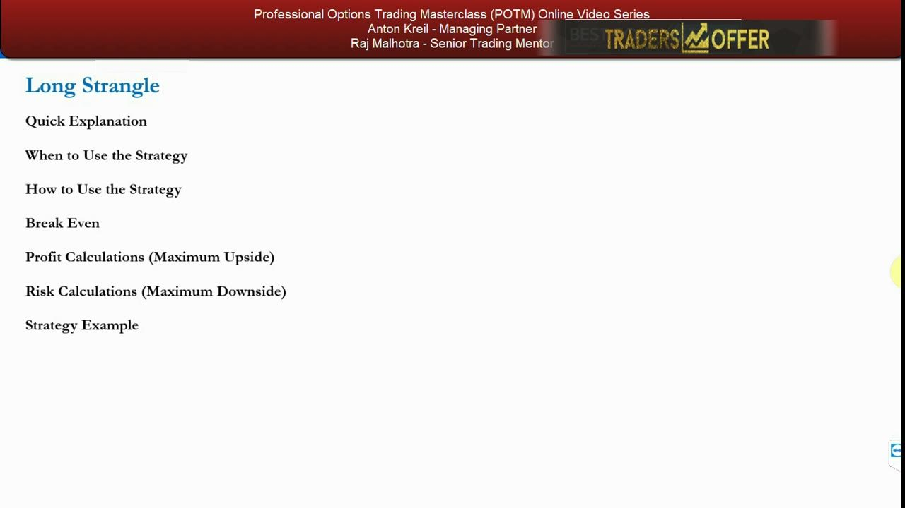
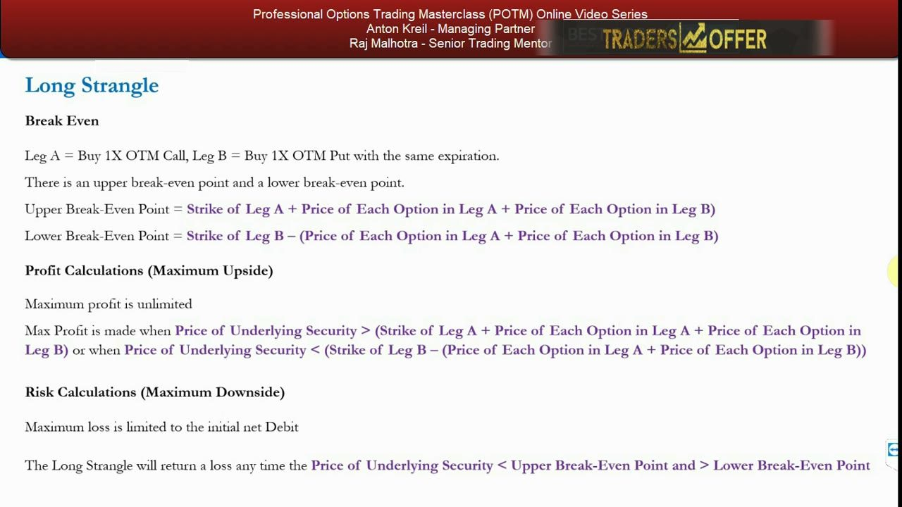
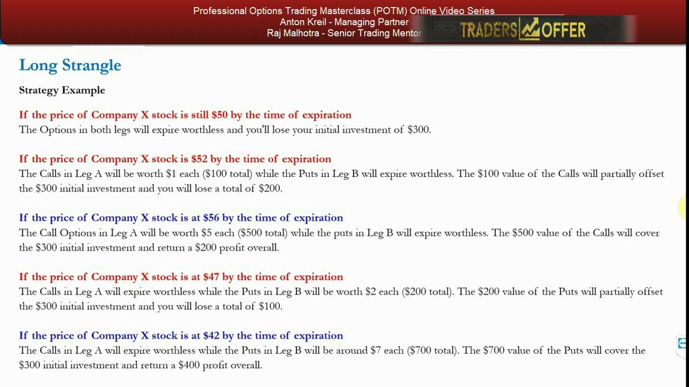

Long Strangles — The Wider, Cheaper Straddle
The OTM cousin of the long straddle: a cheaper non-directional volatility bet that needs a bigger move to pay off.
A long strangle buys an OTM call and an OTM put at the same expiry — same long-volatility dynamics as the straddle, but the OTM strikes make it cheaper to put on while demanding a larger move to profit. Rated medium usefulness, and still low for the retail trader mandate.
The gist
- A long strangle = BUY 1x OTM call (higher strike) + BUY 1x OTM put (lower strike) with the SAME expiration; non-directional, long-volatility, paid for as a net debit.
- Same dynamics as the long straddle EXCEPT the legs are out-of-the-money instead of at-the-money, so it costs less as a debit for the same time to expiration.
- The trade-off: probability of paying off is LOWER (the stock must move by a lot more), but if it does move that far the return on investment is HIGHER than the long straddle.
- Parameters: Non-Directional Bet, Volatility Bet, Simple, Two Transactions, Debit, Max Risk Low/Defined, Max Gain Unlimited.
- Max loss = the total premium paid, realized ANYWHERE between the two strikes (both legs expire worthless there); two breakevens — call strike + total premium (upper) and put strike − total premium (lower).
- Anton states usefulness is only MEDIUM, like the long straddle, and it remains of LOW usefulness to the retail trader mandate; it's studied to build understanding for the strap-strangle and strip-strangle directional variants coming next.
- Worked example (Company X @ $50): $51 OTM call @ $1.50 ($150) + $49 OTM put @ $1.50 ($150) = net debit $300; breakevens $54 and $46.
What the Long Strangle Is
- The second volatility bet in the series and the direct OTM cousin of the long straddle.
- You BUY one out-of-the-money call and BUY one out-of-the-money put with the same expiration.
- It's a non-directional, long-volatility trade: you profit if the underlying moves a lot, either direction.
- Everything that applies to the long straddle applies here — only the strikes change.
Anton frames this as a quick lesson: once you've understood the long straddle, the long strangle takes little time to explain. The single structural difference is that both legs are placed out-of-the-money rather than at-the-money.
Cheaper Debit, Bigger Move Needed
- Because the legs are OTM, the strangle costs LESS as a debit than a straddle for the same time to expiration.
- But the probability of it paying off is LOWER — the underlying has to move by a lot more to get there.
- If the stock does make that larger move, the return on investment is HIGHER than the long straddle's.
- Parameters row: Non-Directional · Volatility · Simple · Two Transactions · Debit · Max Risk (Low Defined) · Max Gain (Unlimited).
The strangle is a lower-probability, higher-payoff version of the straddle: you pay less upfront but need a bigger move. How and when to use it are unchanged from the long straddle — Anton doesn't repeat them because the only difference is that the strikes are OTM, not ATM.

Usefulness: Medium — and Still Low for Retail
- Anton characterizes the usefulness as only MEDIUM, exactly like the long straddle.
- It remains of LOW usefulness to the retail trader mandate.
- It's included to give perspective on what 'low usefulness' means when analyzing strategies under the retail mandate.
- It's also groundwork for the directional variations covered next: the strap strangle and the strip strangle.
Carry the rating faithfully: medium in the framework, but low for retail. The real reason to learn it is that it underpins the directional strangle variants Anton studies in the following videos.

Breakevens, Profit and Risk
- Leg A = Buy 1x OTM Call; Leg B = Buy 1x OTM Put, same expiration — an upper and a lower breakeven.
- Upper breakeven = Strike of Leg A + (price of each option in Leg A + price of each option in Leg B).
- Lower breakeven = Strike of Leg B − (price of each option in Leg A + price of each option in Leg B).
- Max profit is unlimited above the upper breakeven or below the lower breakeven; max loss is limited to the initial net debit.
- The strangle returns a loss any time the price sits below the upper breakeven AND above the lower breakeven.
The payoff has a FLAT bottom: anywhere in the zone between the two strikes both legs expire worthless and you simply lose the full premium. The formulas are identical to the long straddle — you just plug in OTM strikes instead of ATM.

Worked Example — Company X
- Company X trades at $50; you expect a big move but not the direction.
- Leg A: buy a $51 OTM call at $1.50 (×100 = $150). Leg B: buy a $49 OTM put at $1.50 (×100 = $150). Net debit = $300.
- Breakevens are $54 (upper) and $46 (lower).
- Still $50 at expiry → both legs worthless → lose the full $300 (max loss).
- $52 → calls worth $1 each ($100), puts worthless → net loss $200.
- $56 → calls worth $5 each ($500), puts worthless → +$200 profit.
- $47 → calls worthless, puts worth $2 each ($200) → net loss $100.
- $42 → calls worthless, puts around $7 each ($700) → +$400 profit.
This is the same setup Anton used for the long straddle, re-priced with OTM strikes for comparison. Notice the flat max-loss zone: at $50, $52 and $47 the trade still loses because the stock hasn't travelled far enough past a strike — it only pays once the move clears a breakeven at $54 or $46.

Glossary
- Long StrangleBuying 1x out-of-the-money call and 1x out-of-the-money put with the same expiration — a non-directional, long-volatility trade paid for as a net debit.
- Out of the Money (OTM)An option whose strike is away from the current spot: a call struck above spot or a put struck below it. OTM options are cheaper than at-the-money ones, which makes the strangle a lower-cost, lower-probability bet than the straddle.
- Net DebitThe total premium paid to open the position (both legs bought). It is also the maximum possible loss on the long strangle.
- Breakeven PointThe underlying price at which the trade neither profits nor loses. The strangle has two: call strike + total premium (upper) and put strike − total premium (lower).
- Non-Directional BetA trade that profits from a large move in either direction rather than betting the underlying will go a specific way.
- Retail Trader MandateAnton's benchmark for how useful a strategy actually is to a retail trader; by this measure the long strangle rates only low usefulness despite its medium framework rating.
- Strap / Strip StrangleDirectional variations of the long strangle (weighted toward the up- or down-side) that Anton studies in the following videos; the plain long strangle is groundwork for them.